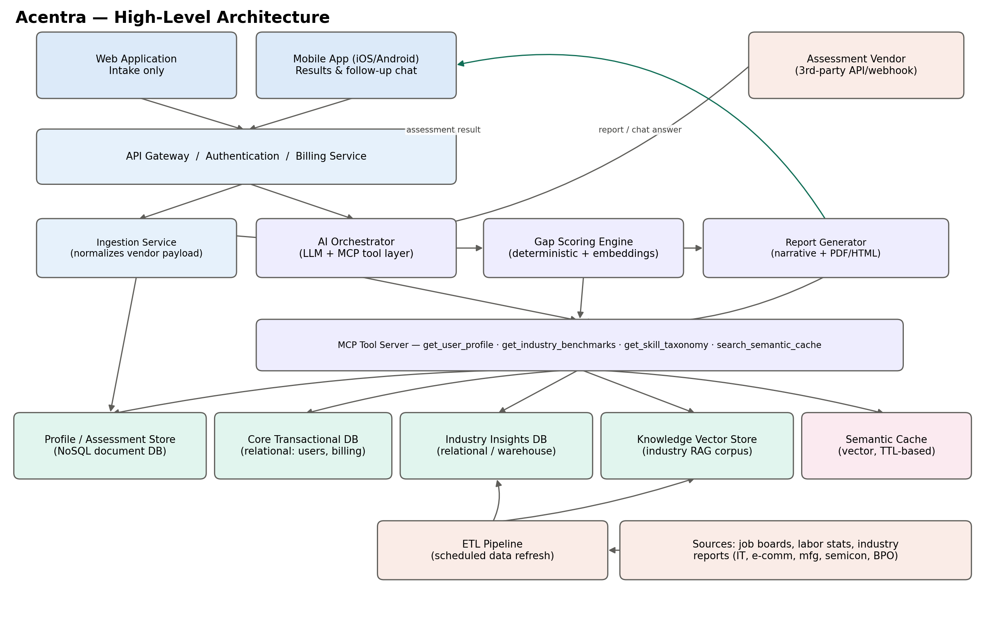
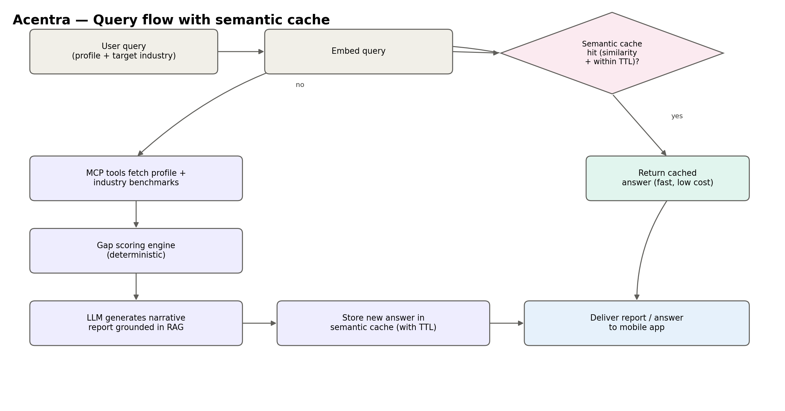

1. Introduction
1.1 Purpose of this document
This document presents the solution design for Acentra, a generative-AI-based career enablement platform. It describes the problem being addressed, the overall solution architecture, the data design, the artificial-intelligence orchestration approach, and the technology considerations that inform the platform's design.
1.2 Problem statement
Fresh graduates and early-career professionals (0–2 years of experience) frequently lack visibility into how their academic background and personal aptitude map to real industry roles. This is especially true for candidates seeking to move into a different field than the one they studied — for example, a science graduate exploring a career in information technology. Existing career-guidance tools are largely generic and do not combine a candidate's personal assessment data with live, industry-specific market intelligence to produce a personalised, actionable gap analysis.
1.3 Proposed solution
Acentra addresses this gap by combining a structured intake assessment (personal details, education, personality, and psychometric evaluation) with curated industry-market data, and using a generative AI layer to produce a personalised report identifying the candidate's education, skill, experience, and personality gaps against a chosen target role. The platform positions itself as an enablement and coaching tool: it guides and prepares candidates for the job market but does not commit to or guarantee job placement.
1.4 Positioning within a broader career-coaching vision
Acentra, as scoped here, is a focused early-career entry point — addressing candidates with 0–2 years of experience across five target industries. It is positioned as the first stage of a larger, longer-term vision for an AI-powered career and life-coaching platform that would eventually carry a person from early-career self-discovery through professional growth to senior leadership, on one continuous, evidence-based journey (Discover → Grow → Lead). Capabilities associated with that broader vision — scored rehearsal/role-play, exam-preparation content generation, deeper psychometric validation — are noted as future direction in Section 14, but are not part of the current design scope.
2. Objectives and scope
2.1 Objectives
- Assess a candidate's education, skills, personality, and experience through a structured intake process.
- Identify and quantify the candidate's gap against a target industry role across four dimensions: education, skills/competency, experience, and personality fit.
- Provide career pathway guidance, including adjacent or non-obvious pathways such as science-to-IT transitions.
- Surface market insights — higher-education options, job trends, industry growth, and city-level demand — for the candidate's industry of interest.
- Support soft-skill development and job-search readiness without guaranteeing placement outcomes.
- Offer the platform through both a one-time report purchase and a subscription model that allows follow-up queries.
2.2 In-scope functionality
- Structured intake assessment: personal details, educational qualification, personality assessment, and psychometric assessment via a licensed third-party assessment provider.
- Optional resume upload for supplementary skill signal.
- Gap analysis and pathway report generation for five target industries: IT services, e-commerce, manufacturing, semiconductor, and BPO.
- Market insight reporting, including city/location-level recommendations.
- Soft-skill development guidance and job-search readiness support.
- One-time report purchase and subscription-based follow-up querying.
- A web application for intake, and mobile applications (iOS/Android) for viewing results and conversational follow-up.
2.3 Out-of-scope functionality
- Job placement guarantees, direct employer matching, or job applications.
- In-house development of psychometric assessment intellectual property — the platform integrates a licensed third-party assessment engine.
- A live, human-mentor marketplace (identified as a candidate for a future phase).
- Industries beyond the five initial target sectors.
- Payroll, HR-technology, applicant-tracking, or interview-scheduling functionality.
3. Target user personas
| Persona | Description | Primary need |
|---|---|---|
| Fresh graduate | Recently completed a degree, no work experience, unclear on career direction. | "What can I do with my degree, and what am I missing?" |
| Career pivoter | 0–2 years of experience, seeking to move into a different industry or function. | "Can I realistically move into IT or e-commerce, and how?" |
| Science-to-IT explorer | Non-computing academic background, evaluating the viability of an IT career. | "What is my gap against an entry-level IT role, and what is the fastest credible path?" |
4. Solution architecture
The solution is designed as a set of loosely coupled services organised around three data domains — candidate profile and assessment data, industry market-insight data, and a semantic answer cache — coordinated by a generative AI orchestration layer. A key design principle is that the AI layer never accesses the underlying data stores directly; it interacts with a governed tool-access layer that mediates every data request the model makes.

4.1 Component overview
| Component | Responsibility |
|---|---|
| Web application | Collects the intake form (personal details, education, resume upload) and hands off to the third-party assessment provider. Report viewing is not part of the web experience. |
| Mobile application | Displays generated reports and hosts the conversational follow-up experience for subscribers. |
| API Gateway / Authentication / Billing | Handles authentication, request routing, rate limiting, and subscription/entitlement checks. |
| Ingestion Service | Receives assessment results from the third-party vendor and normalises vendor-specific formats into the platform's internal profile structure. |
| AI Orchestrator | Coordinates each AI-generated response: checks the semantic cache, retrieves grounding data through the tool-access layer, and invokes the language model. |
| Gap Scoring Engine | Performs the structured, rules- and embedding-based comparison between a candidate profile and a target role, producing quantified gap scores before any narrative is generated. |
| Report Generator | Converts the structured gap output and retrieved market context into the final narrative report. |
| Tool-access layer (MCP) | The sole interface through which the AI model reaches application data — a curated set of read-only functions rather than direct database access. |
| Data pipeline | Scheduled jobs that refresh the industry insight data store from external sources on a defined cadence. |
5. Data architecture
The solution follows a polyglot-persistence approach: different categories of data are held in the data store best suited to their structure and access pattern, rather than in a single database technology.
5.1 Candidate profile and assessment data
Nature of the data: Semi-structured and provider-dependent, since assessment output formats vary by vendor. Personality and psychometric results are treated as sensitive personal data.
Design choice: A NoSQL document-oriented database (e.g. MongoDB, Amazon DynamoDB, or Azure Cosmos DB) for the assessment payload, since the document model tolerates schema variation across vendors and versions without migrations.
Companion store: A relational database for entities requiring strong consistency: user accounts, consent records, subscriptions, billing, and report metadata.
Treatment of the assessment vendor: The vendor is treated as a data source, not a system of record. Results are ingested into Acentra's own store as soon as generated, so the platform retains data for regeneration, follow-ups, and audit independent of vendor retention policy.
5.2 Industry insight data
Industry data — salary bands, city-level demand, skill taxonomies, growth trends for the five target sectors — is structurally distinct from candidate data and held separately:
- Structured layer: a relational database (or analytical warehouse as volume grows) for tabular, numeric data supporting aggregate queries.
- Unstructured layer: a vector store holding embeddings of industry reports and job descriptions, enabling retrieval-augmented generation.
- Refresh cadence: a scheduled pipeline, since labour-market data becomes outdated within months.
- Sources: government labour statistics, job-board aggregators, and industry-association reports (IT services, e-commerce, manufacturing, semiconductor, BPO), each confirmed against source licensing terms.
5.3 Semantic cache for repeated queries
A meaningful proportion of candidates share similar profiles and target-industry combinations. To avoid re-invoking the language model for substantially similar questions, a semantic cache sits as a distinct layer from the industry knowledge base:
- The semantic cache stores embeddings of prior (profile summary + target industry + question) combinations mapped to previously generated answers.
- The industry knowledge base stores embeddings of the market-data corpus used to ground new generations.

5.4 Data store summary
| Data domain | Store type | Rationale |
|---|---|---|
| Candidate profile & assessment results | NoSQL document store | Vendor formats vary and evolve; avoids migrations. |
| Accounts, billing, subscriptions, consent | Relational database | Requires strong consistency and transactional integrity. |
| Industry benchmarks (salary, demand, trends) | Relational database / warehouse | Tabular, aggregate, analytical access pattern. |
| Industry reports and articles (unstructured) | Vector store | Semantic retrieval to ground AI-generated narrative. |
| Cached responses to similar queries | Vector store (separate index, time-bound) | Fast, low-cost semantic lookup before invoking the model. |
6. Generative AI orchestration design
The design separates data retrieval, structured analysis, and narrative generation into distinct stages, rather than asking the language model to perform all three at once — improving consistency, auditability, and cost-efficiency.
6.1 Governed tool access
The language model does not receive direct database credentials or unrestricted query capability. A governed tool-access layer exposes a small, curated set of read-only functions through which the model requests exactly the data it needs — a candidate's profile summary, industry benchmark figures for a city, or the canonical skill list for a role. This pattern, commonly implemented using the Model Context Protocol (MCP), provides an auditable record of what data informed any given AI output.
6.2 Retrieval-augmented generation
Narrative generation is grounded using retrieval-augmented generation: relevant passages from the industry knowledge base are retrieved based on the candidate's target role and included as context, so market-related claims in the report are traceable to source data.
6.3 Processing flow
For every candidate query, the system first checks the semantic cache; on a miss, it retrieves the candidate profile and relevant industry data through the tool-access layer, computes structured gap scores, and only then invokes the language model — writing the result back to the cache for future reuse.
7. Gap analysis approach
Gap analysis is designed as a two-stage process, separating deterministic computation from narrative generation.
7.1 Structured comparison stage
- Education gap: comparison of the candidate's qualification against the target role's typical/required qualification.
- Skill and competency gap: comparison of stated and resume-derived skills against a canonical skill taxonomy for the target role.
- Experience gap: comparison of years/type of experience against the typical experience band for the role level.
- Personality and soft-skill fit: comparison of psychometric output against a role-fit profile.
This stage produces a structured, quantified gap summary with supporting evidence, ensuring consistency across candidates with similar profiles.
7.2 Narrative generation stage
The language model receives the structured gap summary and retrieved industry context, producing the reader-facing report: gap explanation, recommended pathway, soft-skill suggestions, and city-level recommendations — grounded in already-verified data.
8. Report generation and monetisation model
8.1 Report contents
- Education, skill, experience, and personality-fit gap summary for the requested target role.
- Recommended career pathway(s), including adjacent roles.
- Soft-skill development recommendations.
- Market insight: higher-education options, job-trend direction, industry growth outlook.
- City-level insight: recommended locations for the target role.
8.2 Monetisation approach
| Model | Description | Design implication |
|---|---|---|
| One-time report | Single report for one target industry/role. | Retained and re-viewable; a new target industry requires a new purchase or active subscription. |
| Subscription | Follow-up questions and additional reports for the subscription duration. | Usage metering and rate limiting; every follow-up routed through the semantic cache first. |
9. Application architecture: web and mobile
| Surface | Role in the solution | Design note |
|---|---|---|
| Web application | Intake only: personal details, education, resume upload, hand-off to assessment. | Limited to the intake funnel; does not display generated reports. |
| Mobile application (iOS/Android) | Report viewing and subscription follow-up chat. | Routed through the same AI orchestration layer as report generation. |
| Shared backend | A single API layer serves both web and mobile. | No duplicated business logic between clients. |
10. Technology considerations
The final selection would typically depend on team expertise, cloud commitments, budget, and expected scale; the options below illustrate the range of suitable choices rather than mandating a specific vendor.
| Layer | Representative options |
|---|---|
| Cloud platform | Amazon Web Services, Microsoft Azure, or Google Cloud Platform |
| Candidate profile / assessment store | MongoDB, Amazon DynamoDB, or Azure Cosmos DB (NoSQL document store) |
| Transactional store | PostgreSQL or a comparable managed relational database service |
| Industry insights store | PostgreSQL initially, migrating to a warehouse (BigQuery/Snowflake) if volume grows |
| Vector store (RAG & semantic cache) | Pinecone, Weaviate, Milvus, or a vector extension on the relational database |
| Generative AI model | A large language model API (e.g. Anthropic Claude), selected per task |
| Tool-access / orchestration layer | An MCP-based tool server or equivalent internal orchestration service |
| Data pipeline / ETL | Apache Airflow or a managed equivalent |
| Mobile application | React Native, or native iOS/Android development |
| Web application | A modern web framework such as React or Next.js |
| Authentication | A managed identity provider (AWS Cognito, Auth0, Azure AD B2C) |
| Payments and subscriptions | A payment gateway such as Stripe or Razorpay |
11. Security and privacy considerations
- Psychometric and personality data is classified as sensitive personal data and encrypted at rest and in transit.
- Explicit, granular consent captured at intake for data collection, vendor sharing, and AI-generated report creation.
- Applicable data-protection regime(s) — e.g. India's DPDP Act and/or GDPR — identified based on target markets, informing consent design and data-residency choices.
- Since assessment data is retained beyond the vendor's systems, the platform provides its own data-subject access/deletion mechanism.
- The tool-access layer returns only the fields required for a given task, limiting the model's exposure to sensitive information.
- Every request through the tool-access layer is logged, supporting audit and compliance review.
12. Non-functional considerations
| Concern | Design approach |
|---|---|
| Cost management | Semantic caching ahead of LLM calls; deterministic gap scoring ahead of narrative generation; subscription usage metering. |
| Responsiveness | Async report generation with completion notification; follow-up queries target near-real-time response, favouring cache hits. |
| Data freshness | Refresh cadence and cache expiry kept in alignment. |
| Scalability | Stateless application services and horizontally scalable data stores. |
| Auditability | Every report traceable to its structured gap summary and the data-access calls that produced it. |
13. Assumptions
- A specific cloud provider has not been mandated; the design is intentionally portable across major providers.
- A third-party assessment vendor will be integrated via API/webhook, treated as a data source rather than the platform's system of record.
- The initial target market is assumed to be India, informing future data-residency decisions.
- Mentorship in the initial release is limited to structured content and coaching recommendations, not a live mentor marketplace.
- Industry data sourcing assumes licensed or API-based access rather than unauthorised collection.
14. Future enhancements
Beyond the near-term items below, Acentra could evolve toward the longer-term Discover → Grow → Lead vision of a continuous career and life-coaching platform spanning a person's full career.
- A live, one-to-one mentorship marketplace with candidate-mentor matching.
- Expansion of the platform beyond the five initial target industries.
- Web-based report viewing, once the mobile-first engagement model has been validated.
- Role-specific embedding refinement to improve skill-gap scoring precision.
- Multi-region deployment to support markets beyond the initial launch geography.
- Extension to mid-career and senior-leadership audiences, beyond the initial 0–2 year focus.
- Scored rehearsal and role-play simulation for interviews, performance reviews, and pitches — addressing the "rehearsal gap" in existing career-guidance tools.
- Exam-preparation content generation, favouring fresh, syllabus-aligned material over recycled question banks.
- A dedicated psychometric validation layer, developed with domain experts, strengthening the scientific grounding of AI-assisted insights.
- A more advanced privacy architecture for sensitive personal data, treated as a long-term trust differentiator.